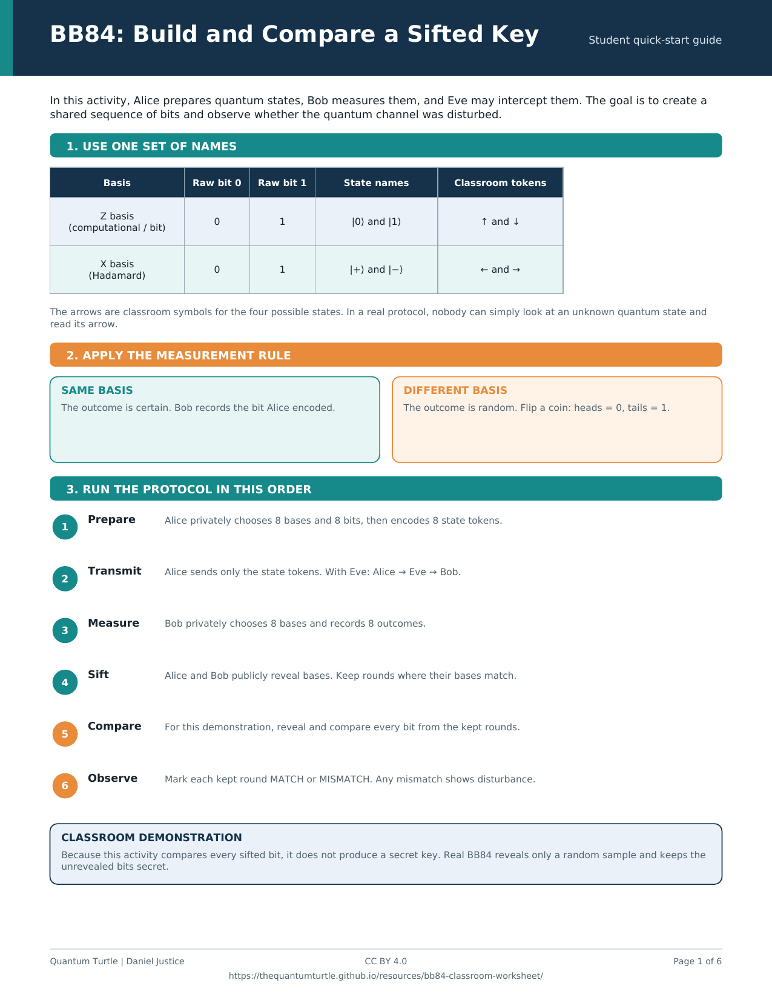

Online / screen
Complete color edition
All student pages plus the instructor guide, with color cues for online viewing.
Download PDFFree classroom resource
A role-based activity that helps students see how basis choices, sifting, and eavesdropping fit together in quantum key distribution.

What students do
Alice records bits and bases; Eve and Bob make their own basis choices.
The group marks each position KEEP or DROP, then compares the kept bits.
Students connect mismatches with the disturbance an eavesdropper can introduce.
Downloads
The complete worksheet includes student role sheets and the instructor guide. Student-only files are ready to distribute directly.
Online / screen
All student pages plus the instructor guide, with color cues for online viewing.
Download PDFBlack & white
Balanced, high-contrast pages designed for ordinary classroom printing.
Download PDFStudent handout
Distribute the activity without the instructor notes.
Teaching support
A compact reference for setup, pacing, debrief, and the real sampling method.
Download PDFTeaching note
This classroom shortcut makes the first pass easy to follow. In an actual BB84 exchange, Alice and Bob publicly compare only a random sample of their sifted bits. The uncompared bits—not the revealed sample—can contribute to a secret key after further processing.
Reuse and attribution
This resource is licensed under Creative Commons Attribution 4.0 International.
Suggested citation: Justice, Daniel. BB84 Classroom Worksheet. Version 1.0, 2026. Quantum Turtle. CC BY 4.0.